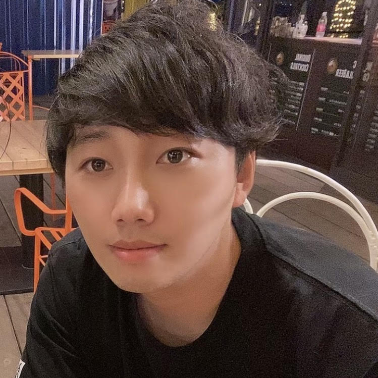
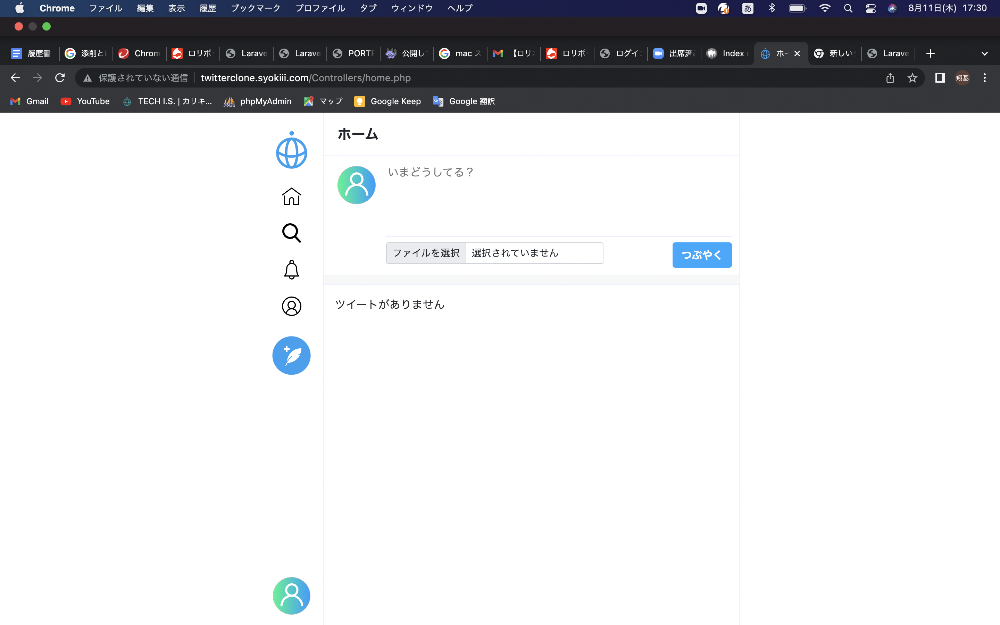
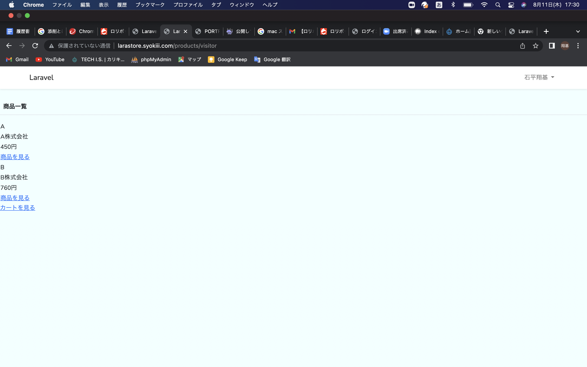
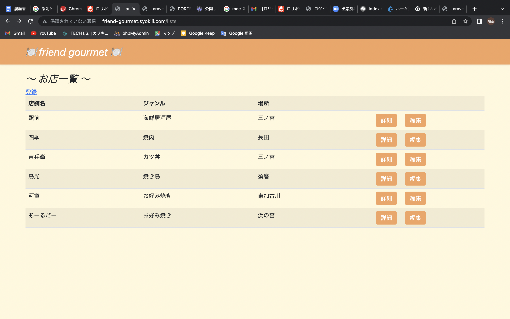

Profile

石平 翔基
HTML / CSS / PHP / MySQL / Laravel / GitHub
石平翔基と申します。趣味はフットサル、サウナ、カラオケ、グルメ、アニメ、映画鑑賞です。私の長所は、行動力、チャレンジ精神、分析力に優れている所です。一度興味を持ったことに対して自分に納得がいくまで分析と試行を繰り返し、局面を打開する事に喜びを感じて生きてきました。未経験ですが不撓不屈の精神で日々成長し、世に貢献できる人材を目指します。


Works
-

Twitterクローン
この作品はTECH.ISのカリキュラムで作りました。Twitterクローン開発を通してHTML,CSS,PHPの理解をより一層深めることができました。
HTML / CSS / PHP / MySQL -

ネットショップ
この作品はTECH.ISのチーム開発で作りました。自分は主に配送会社CRUDやテストの役割をこなしました。チーム開発を通してコミュニケーションを取りながら認識確認をしていく経験やより難しい処理を試行錯誤しながら乗り越えていく経験ができました。
HTML / CSS / PHP / MySQL / Laravel /GitHub -

フレンドグルメ
グルメな友人が多い中で起きている問題を解消したいと思い、このサービスを作りました。BootStrapを導入しながら配色は独自CSSで書きたいというこだわりを再現する際に、独自CSSがうまく優先されない点で苦労しました。この先、オススメのデートスポットなどの様々なジャンルも作ろうと考えています。
HTML / CSS / PHP / MySQL / Laravel / GitHub